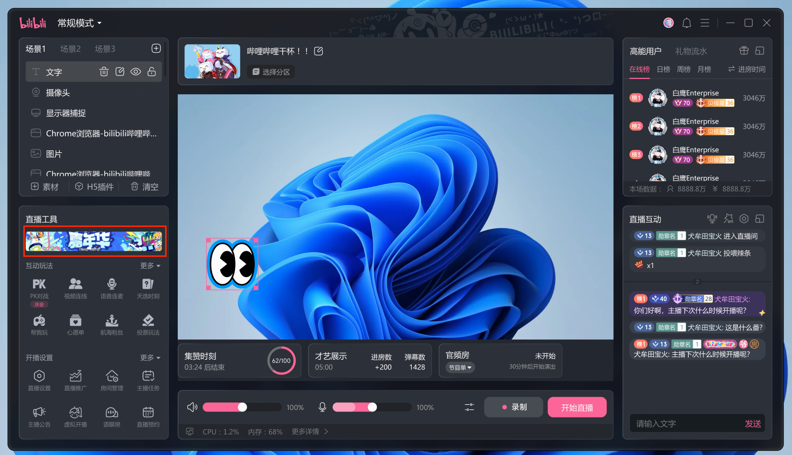
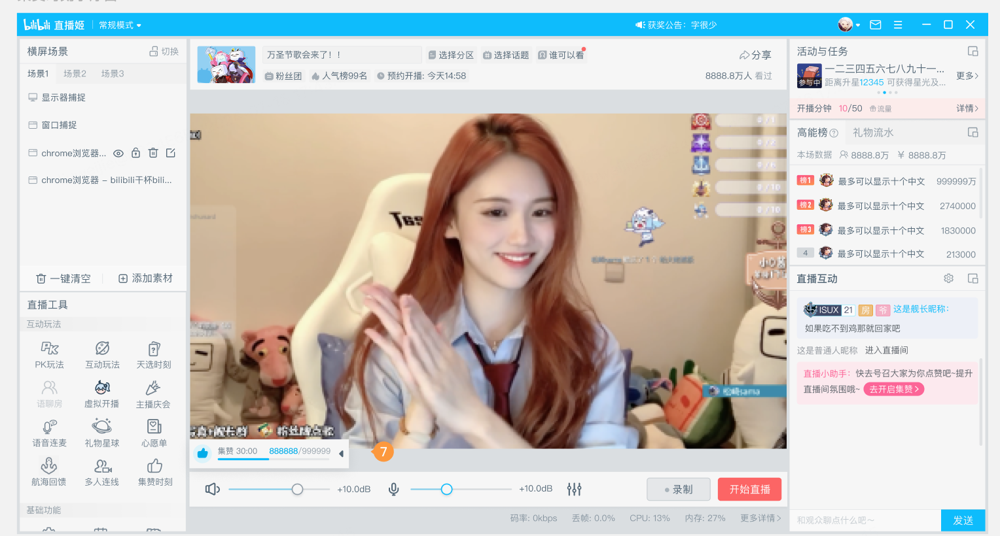

How I treated a usability crisis as a governance problem — auditing 230+ pages, restructuring the streaming flow, and improving streamer experience through four parallel workstreams
Bilibili's PC streaming tool — 直播姬 (Streaming Ji) — is the official desktop client for creators who want fine-grained control over their streams: scene management, overlays, interaction widgets, and real-time monitoring. It is the primary tool for Bilibili's most active and commercially valuable streamers.
Over several years of rapid feature expansion, the tool had accumulated significant product debt. Each new business requirement was added independently, without a shared information architecture or design governance model. By 2023, the compounding complexity had reached a crisis point.
User research surfaced three compounding failure modes:
The surface problem was usability. The root problem was governance failure: no shared standards, no ownership of information architecture, no rules for how new features integrate into the existing surface. A UI refresh without governance would reproduce the same entropy within 18 months.
I structured the project as a governance intervention, not a redesign. The goal was to establish the rules, then fix the surface — so the rules would hold after the project ended.


After BeforeAudited all 230+ pages in the tool, mapping the information hierarchy across every state. Identified inconsistencies in navigation patterns, label naming, and layout logic. Established a unified design system and information structure — then applied it systematically across the surface. The result was not just visual consistency, but a measurable reduction in the friction between opening the app and going live.
Redesigned feature entry points so they were consistently discoverable. Added real-time progress feedback — streamers could now see the status of active features (e.g., how many viewers had participated in a poll) without leaving their workflow. These changes addressed the two reasons streamers weren't using official features: they couldn't find them, and once activated, the features felt like a black box.
Designed a governed resource slot system for official campaigns — a dedicated, standardized surface where platform activities could reach streamers reliably. By giving campaigns a defined home in the information architecture, we removed the dependency on ad-hoc placement and created a predictable reach channel for the business side.
Coordinated with engineering on performance optimization alongside the UI work. Memory footprint was reduced by 15% and crash rate declined — improvements that ensured the tool was stable and responsive during live sessions, where instability has direct commercial consequences for the streamer.
The most important decision was reframing the project as governance rather than redesign. A pure visual refresh would have resolved the immediate complaints without addressing the structural conditions that produced them. By auditing 230+ pages first, I could see the full pattern of failures — not just the most visible ones — and design interventions that would hold over time.
The +17pp lift in feature penetration was the result I'm most proud of, because it came entirely from reducing discovery and feedback friction, not from any change to the features themselves. The features worked — streamers just couldn't tell.